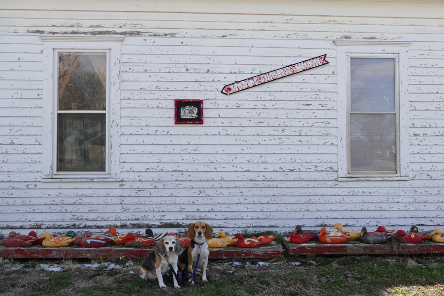

This house next to the Garden of Eden seems to be owned by the same people who own a shop downtown which displays "The World's Largest Collection of the World's Smallest Versions of the World's Largest Things". There were other arty businesses on Main Street too, all still closed for the winter. Note also the duck decoys.
Halley Beagle Kansas Lucas Wallace Beagle